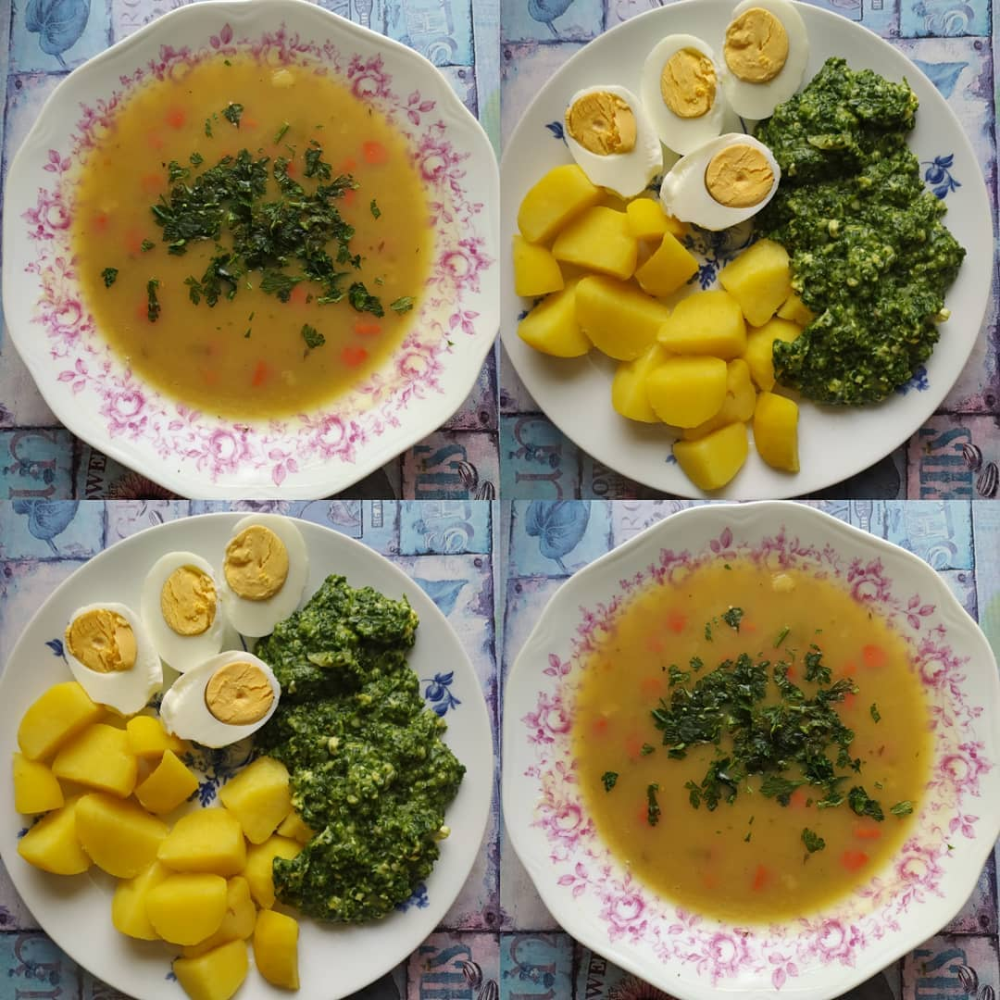

Dusený špenát podľa @kroupovakarla — Normy Jedál
Sobota
Dnešní oběd
🌺🌺🌺🌺🌺🌺🌺🌺🌺🌺🌺🌺🌺🌺🌺🌺 Bramborová polévka
Vejce, špenát s bramborem.
=======================================
#bramborovapolevka #bramborovápolévka #spenat #špenát #brambory #brambory🥔 #bramborová #polévkajegrunt #polévka #polevkajezaklad #polevka #vejce #vejcenatvrdo #vejcevejci #sobotní #sobotníoběd #obed #obedy #obedyobedy #obědy #sobota #dobrouchuť #dobrouchutvsem #dobrouchuťvšem #dobrouchut #dobrouchutpokudpraveobedvate #rychlerecepty #rychlovka #dusenyspenat #dušenýšpenát